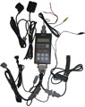

ТЕСТЕР СИСТЕМ ВПРЫСКА ТОПЛИВА ТФМ-3

Тестер ТФМ-3 является анализатором топливной системы и портативным стендом промывки и контроля форсунок впрыска топлива.
Дополнительно в тестер ТФМ-3 включены функции сканера в части чтения паспортных данных, чтения и стирания ошибок, сброса адаптационных данных и управления исполнительными механизмами.
Основной конструктивной особенностью тестера ТФМ-3 является наличие ЖК-индикатора с подсветкой на 2х16 символов, корпус из бензомаслоустойчивой пластмассы (АБС) и пленочная пультовая панель на 6 клавиш.
Габаритные размеры (без кабелей) 178х88х28 мм .
Тестер ТФМ-3, комплектуемый высокоточным датчиком давления (погрешность не превышает 1%) и переходными штуцерами, позволяет измерить мгновенное давление бензина в топливной рампе и оценить его минимальное и максимальное пиковое значение.
В сравнении с манометром, применение датчика давления дает ряд преимуществ:
- цифровой вывод данных на дисплей прибора обеспечивает удобство и оперативность съема данных;
- на несколько порядков повышается быстродействие контроля, что позволяет, например, оценить неисправность регулятора давления топлива и электробензонасоса на переменных режимах работы двигателя;
- при необходимости обеспечивается дистанционность контроля, что позволяет контролировать давление топлива в процессе движения автомобиля (из кабины) и, таким образом, оценивать причины провалов или недостаточной приемистости двигателя, связанные с недостаточной топливоподачей.
Тестер ТФМ-3, комплектуемый форсуночным кабелем, который подключается к жгуту форсунок инжекторного двигателя, позволяет неразборным методом выполнить промывку форсунок, протестировать форсунки на баланс и оценить качество промывки форсунок путем контроля перепадов давления топлива в рампе до и после промывки.
Тестер ТФМ-3 позволяет предварительно оценить работоспособность новой форсунки путем контроля на слух ее пороговой частоты срабатывания, для этого достаточно иметь малогабаритный источник =12В/0,3А и выполнить 1 или 2 теста управления форсункой.
Тестер ТФМ-3, имеет быстродействующий канал измерения бортового напряжения с точностью 0,1 В, что позволяет измерять мгновенное (текущее), минимальное и максимальное напряжение бортовой сети автомобиля, например, для оценки степени зарядки аккумулятора и исправности стартера при стартерной прокрутке двигателя, или для оценки пульсаций напряжения бортовой сети при неисправном генераторе.
В тестере ТФМ-3 предусмотрена программная калибровка измерительных каналов, что позволяет откалибровать каналы контроля давления и измерения бортового напряжения самостоятельно, используя поверенный манометр и обычный вольтметр.
ТФМ-3 работает в следующих режимах, выбираемых из экранного меню:
- «>РЕЖИМ-УПР.ЭСУД»–тестирование топливной системы с подключением к каналу диагностики;
- «БАЛАНС-АВТОМАТ.»–баланс форсунок (сравнение форсунок по динамической производительности).
Управление бензонасосом–по диагностическому протоколу, управление форсунками от ТФМ-3 через форсуночный кабель.
На экран выводится среднее падение давления по всем цилиндрам, а также, для каждого цилиндра, падение давления и абсолютное и относительное отклонение от среднего;
- «БАЛАНС-ЭСУД»–баланс форсунок (сравнение форсунок по динамической производительности).
Управление бензонасосом и форсунками–по диагностическому протоколу.
На экран выводится среднее падение давления по всем цилиндрам, а также, для каждого цилиндра, падение давления и абсолютное и относительное отклонение от среднего;
- «БАЛАНС-ФОРСУНКА»–баланс форсунок (сравнение форсунок по динамической производительности).
Проводится последовательно для каждого цилиндра, выбор тестируемого цилиндра производится вручную. Управление бензонасосом–по диагностическому протоколу, управление форсункой от ТФМ-3 через форсуночный кабель.
На экран выводятся значения текущего, минимального и максимального давления для выбранного цилиндра;
- «ЦИКЛЫ ПРОМЫВКИ:»–промывка форсунок.
Управление бензонасосом–по диагностическому протоколу, управление форсункой от ТФМ-3 через форсуночный кабель;
- «Ф1: 1,5мс/ 30с»–промывка выбранной форсунки импульсами 1,5 миллисекунды в течение 30 секунд;
- «Ф1: 0...4мс/30с»–промывка выбранной форсунки импульсами переменной длительности от 0 до 4 миллисекунд в течение 30 секунд;
- «ТЕСТЫ ПРОЛИВКИ:»–измерение динамической производительности форсунки.
Управление бензонасосом–по диагностическому протоколу, управление форсункой от ТФМ-3 через форсуночный кабель;
- «Ф1: СТАТИКА/ 5с»–измерение производительности выбранной форсунки в статическом режиме 5 секунд;
- «Ф1: 2,0мс/4000ц»–измерение производительности выбранной форсунки при подаче 4000 импульсов длительностью 2 миллисекунды;
- «Ф1: 2,5мс/3000ц»–измерение производительности выбранной форсунки при подаче 3000 импульсов длительностью 2,5 миллисекунды;
- «Ф1: 9,0мс/ 800ц»–измерение производительности выбранной форсунки при подаче 800 импульсов длительностью 9 миллисекунд;
- «Ф1: 0...8мс/ 3ц»–измерение производительности выбранной форсунки при подаче импульсов переменной длительности от 0 до 8 миллисекунд (три полных цикла);
- «ПОРОГ ЧАСТОТЫ:»–проверка пороговой частоты срабатывания форсунки.
Управление бензонасосом–по диагностическому протоколу, управление форсункой от ТФМ-3 через форсуночный кабель;
- «Ф1: 2,0мс/ 5с»
- «Ф1: 1,9мс/ 5с»
- «Ф1: 1,8мс/ 5с»
- «Ф1: 1,7мс/ 5с»
- «Ф1: 1,6мс/ 5с»
- «Ф1: 1,5мс/ 5с»
- «Ф1: 1,4мс/ 5с»
- «Ф1: 1,3мс/ 5с»
- «Ф1: 1,2мс/ 5с»
- «Ф1: 1,1мс/ 5с»
- «Ф1: 1,0мс/ 5с»
- «Ф1: 0,9мс/ 5с»
- «Ф1: 0,8мс/ 5с»
- «Ф1: 0,7мс/ 5с»
- «Ф1: 0,6мс/ 5с»
- «Ф1: 0,5мс/ 5с»
- «Ф1: 0,4мс/ 5с»
- «ГЕРМЕТИЧНОСТЬ»–проверка герметичности топливной системы (течь форсунок).
Управление бензонасосом–по диагностическому протоколу;
- «КОДЫ ОШИБОК»–вывод на экран кодов ошибок;
- «СБРОС КОДОВ»–сброс кодов ошибок;
- «УПРАВЛЕНИЕ ЭСУД:»–управление исполнительными механизмами ЭСУД.
Включение на 3 секунды, отключение на 3 секунды, отказ от управления;
- «БЕНЗОНАСОС»
- «ЛАМПА НЕИСПРАВН.»
- «ФОРСУНКА 1»
- «ФОРСУНКА 2»
- «ФОРСУНКА 3»
- «ФОРСУНКА 4»
- «КАТУШКА 1,4»
- «КАТУШКА 2,3»
- «КАТУШКА 3»
- «КАТУШКА 4»
- «КОНДИЦИОНЕР»
- «ВЕНТИЛЯТОР ОХЛ»
- «ВЕНТИЛЯТОР ОХЛ.2»
- «КЛАПАН РЕЦИРКУЛ.»
- «КЛАПАН АДСОРБЕРА»
- «РЕЛЕ СТАРТЕРА»
- «ВПУСКНОЙ КЛАПАН»
- «РЕГУЛЯТОР ХХ»
- «ОБОРОТЫ ХХ»
- «ПАСПОРТ ЭСУД»–вывод на экран паспортных данных ЭСУД;
- «СБРОС АДАПТАЦИИ»–сброс адаптационных данных, накопленных контроллером ЭСУД в процессе эксплуатации автомобиля;
- «>РЕЖИМ-АВТОНОМ»–тестирование топливной системы без подключения к каналу диагностики.
Выполняются аналогично тестам в режиме «>РЕЖИМ-УПР.ЭСУД». Отличие в том, что для включения бензонасоса используется перемычка.
- «ЦИКЛЫ ПРОМЫВКИ:»–промывка форсунок.
- «ТЕСТЫ ПРОЛИВКИ:»–измерение динамической производительности форсунки.
- «ПОРОГ ЧАСТОТЫ:»–проверка пороговой частоты срабатывания форсунки.
- «ГЕРМЕТИЧНОСТЬ»–проверка герметичности топливной системы (течь форсунок).
- «КОНТРОЛЬ»–контроль давления топлива и напряжения бортсети.
- «ВЕРСИЯ, АДРЕС»–сведения о версии прибора и адрес разработчика.
- «КОРРЕКЦИЯ КОЭФФ.»
- «КАЛИБР-ДАВЛЕНИЕ»
- «СБРОС PA-КОРР.»
- «ДАВЛЕНИЕ=0»
- «ДАВЛЕНИЕ=НОМИНАЛ»
- «КАЛИБ-НАПРЯЖЕНИЕ»
- «СБРОС UB-КОРР.»
- «НАПРЯЖЕНИЕ=НОМ.»
Контроль нейтрализатора тестером ТФМ-3
Процедура проверки позволяет оценить состояние нейтрализатора, который устанавливается в системе выпуска инжекторных автомобилей. Способ состоит в измерении противодавления отработавших газов двигателя в приемной трубе до нейтрализатора.
Нейтрализатор может коксоваться и оплавляться в процессе догорании в нем богатых топливовоздушных смесей, а также разрушаться и ржаветь из-за высоких температур каталитического процесса и конденсируемой влаги.
Сотовая структура нейтрализатора в процессе работы может забиваться продуктами, содержащимися в бензине и всасываемом воздухе: грязью, этилсвинцом, ферроценом, твердыми частицами и др., попадающими из цилиндров, системы впуска и форсунок двигателя.
Все это создает повышенное сопротивление отработавшим газам, то есть противодавление, которое в итоге снижает мощность и экономичность двигателя. Активная поверхность нейтрализатора уменьшается, что увеличивает токсичные выбросы.
Чтобы оценить степень ухудшения пропускной способности нейтрализатора, необходимо проконтролировать противодавление отработавших газов. Это можно выполнить, подключив измеритель давления к системе выпуска до нейтрализатора.
В комплект измерителя давления газов входят: прибор ТФМ-3, датчик давления топлива ДДТ-6М и газовая арматура типа ДДГ-1.
Арматура ДДГ-1 предназначена для пневматической связи датчика давления с системой выпуска отработавших газов и обеспечивает охлаждение газов, поступающих к датчику давления, практически до температуры окружающей среды.
Наконечник арматуры устанавливается взамен датчика кислорода.
Порядок измерения противодавления:
- подготовка к работе:
- отсоединить датчик кислорода (ДК) от жгута проводов и вывернуть его из приемной трубы (или нейтрализатора);
- вкрутить до упора наконечник арматуры ДДГ-1 в посадочное место ДК;
- соединить с наконечником трубку отбора газов ДДГ-1 посредством гайки;
- к штуцеру трубки отбора газов подсоединить датчик давления (ДД);
- подсоединить ДД к прибору, а прибор - к бортовому аккумулятору автомобиля;
- контроль противодавления:
- выбрать режим "КОНТРОЛЬ" в меню тестера;
- запустить двигатель, плавно установить и удерживать в течение 5...10 секунд частоту вращения двигателя в диапазоне 4000...4500 мин-1;
- заглушить двигатель и снять показания - максимальное и минимальное давление;
- критерий: разница показаний между максимальным и минимальным значением давления не должна превышать 10 кПа.
Провести осмотр системы выпуска, если она не отвечает указанным требованиям по противодавлению. Далее, если внешних повреждений труб глушителя или резонатора не обнаружено, то нейтрализатор (каталитический коллектор) должен быть демонтирован и осмотрен "На просвет" на предмет возможного коксования или разрушения его сотовой структуры.
Перед установкой датчика кислорода нанести на его резьбу графитовую антипригарную смазку. Момент затяжки резьбы 25...45 НМ, ключ гаечный на 22 мм (моментный).
В базовый комплект ТФМ-3 входят: прибор ТФМ-3, кабель питания, провод диагностический, кабель форсунки F1, кабель форсунок F4, датчик давления топлива ДДТ-6М, кабель—удлинитель 25-контактный, трубка быстросъемная для контрольного ниппеля М11х1,25 мм, тройник быстросъемный со штуцером М14х1,5 мм, тройник быстросъемный со штуцером 8 мм, цилиндр измерительный 25 мл, руководство пользователя, паспорт, сумка рабочая.
Дополнительно к базовому комплекту можно заказать:
Руководство по эксплуатации и паспорт на прибор ТФМ-3 в формате *.pdf можно взять здесь.
На странице price.html приведены цены на продукцию ООО «А2».
Заказ прибора ТФМ-3